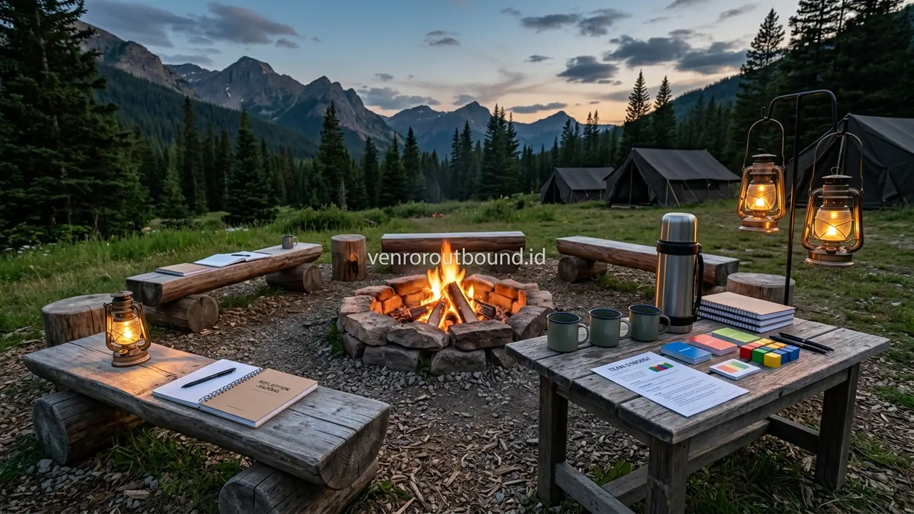

Apa Manfaat Outbound Camping Perusahaan untuk Kebersamaan Tim?
Jawaban singkat: Kegiatan camping dan outbound night activity dapat menciptakan suasana kebersamaan yang berbeda dari aktivitas kantor sehari-hari. Sesi refleksi, sharing, permainan komunikasi, dan kebersamaan malam dapat menjadi media untuk memperkuat interaksi antarpeserta. Namun, pembentukan kedisiplinan dan kedekatan tim tidak terjadi otomatis; hasilnya bergantung pada desain kegiatan, fasilitasi, partisipasi peserta, dan tindak lanjut setelah kegiatan.
Di tengah tingginya ritme kerja profesional modern, interaksi antarkaryawan di lingkungan kantor sering kali terjebak dalam batas-batas fungsional yang kaku. Komunikasi formal melalui email, grup chat instan, atau rapat mingguan kerap menyisakan jarak emosional antardivisi. Bagi para manajer Human Resources (HR) dan pimpinan operasional, mencari format kegiatan luar ruangan yang mampu menyegarkan pikiran sekaligus merekatkan jalinan kerja sama menjadi agenda strategis tahunan. Salah satu alternatif program yang kini semakin diminati perusahaan adalah Paket Outbound Camping yang dipadukan dengan rangkaian aktivitas malam (night activity).
Outbound camping perusahaan menawarkan suasana lingkungan yang sangat kontras dengan hotel atau resor konvensional. Saat peserta diajak keluar dari zona nyaman gedung bertingkat dan menginap di tenda berlatar alam terbuka, terjadi pergeseran persepsi sosial yang menarik. Hierarki jabatan struktural perlahan memudar, berganti dengan kesadaran bahwa seluruh rekan kerja kini berada di bawah atap langit yang sama. Pengalaman berbagi ruang hidup yang sederhana ini menjadi fondasi awal terbangunnya rasa saling percaya, empati, dan kepedulian yang tulus di antara anggota tim.
Mengapa Aktivitas Malam Dapat Membuka Ruang Interaksi yang Berbeda?
Aktivitas luar ruangan pada siang hari umumnya diwarnai oleh permainan dinamis yang memacu adrenalin, kompetisi kelompok, dan energi fisik yang meluap. Namun, ketika senja berganti malam, ritme biologis manusia secara alami mengalami perlambatan. Suasana malam di alam pegunungan—dengan semilir angin dingin, suara gemerisik dedaunan, dan minimnya gangguan sinyal gawai—menciptakan kondisi psikologis yang kondusif bagi percakapan yang lebih mendalam.
Aktivitas malam memberikan ruang bagi komunikasi non-formal yang jarang terfasilitasi di ruang kerja. Dalam suasana yang temaram dan tenang, individu cenderung lebih rileks dan terbuka untuk mendengarkan cerita rekan kerjanya. Obrolan santai mengenai tantangan kerja, harapan pribadi, hingga apresiasi terhadap rekan satu tim dapat mengalir tanpa rasa canggung. Melalui proses ini, rekan kerja tidak lagi dipandang semata-mata sebagai rekan operasional, melainkan sebagai sesama manusia yang memiliki perjuangan, aspirasi, dan nilai-nilai yang patut dihargai.
Bagaimana Camping Dapat Melatih Kedisiplinan?
Kedisiplinan di alam bebas bukanlah kedisiplinan berbasis instruksi militeristik yang kaku, melainkan kedisiplinan fungsional yang berakar pada kesadaran situasional. Berkemah menuntut setiap peserta untuk mematuhi aturan dasar demi kenyamanan dan keamanan bersama. Kedisiplinan ini tercermin melalui beberapa rutinitas nyata di lapangan:
- Ketepatan Waktu (Punctuality): Mengikuti jadwal rundown kegiatan—mulai dari waktu berkumpul, santap malam, sesi night gathering, hingga jam tenang (quiet hours)—melatih kepedulian peserta terhadap waktu orang lain.
- Tanggung Jawab Menjaga Perlengkapan Pribadi dan Bersama: Peserta belajar menjaga tenda tetap kering, merawat matras dan sleeping bag, serta mengelola barang bawaan agar tidak berserakan. Keteledoran kecil di tenda dapat memengaruhi kenyamanan rekan satu tim.
- Kebersihan Lingkungan (Leave No Trace): Membuang sampah pada tempat yang disediakan, menjaga kebersihan area MCK, dan memilah sisa makanan melatih etika serta kepedulian terhadap kelestarian alam dan kenyamanan peserta berikutnya.
- Kepatuhan terhadap Prosedur Keselamatan: Mendengarkan arahan panitia saat briefing awal, mengenakan alas kaki yang tepat saat berjalan di malam hari, dan tidak meninggalkan area perkemahan tanpa izin menjadi cerminan kepatuhan terhadap standar operasional prosedur (SOP).

Persiapan K3 & Pertolongan Pertama Pada Kegiatan Outbound Camping Malam
Simak checklist inspeksi tapak kemah, jalur evakuasi darurat, dan kesiapan medis dasar untuk kegiatan perkemahan perusahaan.
Peran Api Unggun dalam Sesi Refleksi Tim
Secara antropologis, api unggun telah menjadi pusat peradaban manusia untuk berkumpul, bertukar cerita, dan menyatukan komunitas sejak ribuan tahun silam. Dalam konteks corporate camping, pendaran api unggun berfungsi sebagai titik fokus visual (visual focal point) yang menyatukan perhatian seluruh peserta ke dalam satu lingkaran kebersamaan yang setara.
Namun demikian, pemanfaatan api unggun wajib dilakukan dengan penuh tanggung jawab dan kehati-hatian. Api unggun hanya boleh dinyalakan pada area perapian permanen atau wadah khusus yang telah disetujui oleh pengelola perkemahan. Jarak aman antara titik api dengan deretan tenda dan material mudah terbakar harus diperhitungkan secara cermat. Panitia atau fasilitator wajib menunjuk penanggung jawab pemantau api, menyiapkan ember air atau alat pemadam di dekat area, serta memantau arah tiupan angin pegunungan. Jika cuaca kering berangin kencang atau venue memberlakukan larangan pembakaran terbuka, api unggun dapat digantikan dengan instalasi lentera camping yang tetap memancarkan kehangatan visual tanpa risiko percikan api.
Contoh Night Activity untuk Corporate Gathering
Rancangan aktivitas malam perusahaan haruslah mengutamakan kenyamanan psikologis dan keselamatan fisik seluruh peserta. Sangat penting untuk menghindari kegiatan ekstrem yang berisiko, seperti meminta peserta berjalan sendirian di hutan gelap (jurit malam), aktivitas menakut-nakuti bernuansa horor, atau sesi yang mempermalukan individu. Berikut beberapa contoh konsep night activity yang edukatif, konstruktif, dan menyenangkan:
- Storytelling & Organizational Journey: Pimpinan perusahaan atau perwakilan divisi membagikan kisah inspiratif mengenai perjalanan organisasi, tantangan terbesar yang pernah dihadapi bersama, dan harapan di masa depan. Hal ini memperkuat rasa kepemilikan (sense of belonging) karyawan.
- Permainan Komunikasi Ringan (Whisper Chain & Blind Sketch): Simulasi sederhana menggunakan alat tulis atau pesan berantai yang menggambarkan pentingnya kejelasan instruksi, konfirmasi informasi, dan mendengarkan secara aktif tanpa asumsi sepihak.
- Apresiasi Tanpa Suara (Candle of Gratitude / Lantern of Appreciation): Peserta menuliskan kartu apresiasi sederhana bagi rekan kerja yang telah banyak membantu dalam pekerjaan sehari-hari, lalu meletakkannya di dekat lentera rekan yang bersangkutan. Momen ini sering kali menjadi titik balik rekonsiliasi hubungan kerja yang sempat merenggang.
- Akustik & Yell-Yell Kebersamaan: Bernyanyi bersama diiringi petikan gitar akustik sederhana atau menampilkan yel-yel kreatif antardivisi yang membakar semangat kekompakan secara santai.

Bagaimana Menjaga Aktivitas Malam Tetap Terarah?
Tanpa fasilitasi yang terstruktur, acara malam di perkemahan berisiko menjadi sekadar sesi nongkrong tanpa tujuan atau justru membosankan bagi sebagian peserta. Kehadiran fasilitator outbound yang terlatih sangat krusial dalam memandu alur kegiatan. Fasilitator bertindak sebagai moderator yang menjaga agar suasana tetap hangat, tidak melenceng ke arah perdebatan personal, dan memastikan setiap orang merasa dilibatkan tanpa merasa dipaksa tampil.
Fasilitator juga bertugas mengelola durasi sesi secara proporsional. Sesi refleksi yang terlalu panjang dapat menguras energi emosional peserta, sementara sesi yang terlalu pendek tidak cukup untuk menyentuh substansi kebersamaan. Menjaga keseimbangan antara tawa ceria, perenungan bermakna, dan ketertiban waktu adalah kunci dari keberhasilan fasilitasi malam.

Paket Outbound Camping & Fun Night Gathering Perusahaan Batu & Pacet
Rincian akomodasi tenda, susunan acara fun games, konsumsi katering, dan sesi malam hangat di alam pegunungan Jawa Timur.
Apa yang Dilakukan Jika Cuaca Berubah?
Kegiatan luar ruangan di kawasan pegunungan selalu berhadapan dengan dinamika cuaca yang sulit diprediksi. Gerimis atau hujan deras pada malam hari merupakan situasi umum yang wajib diantisipasi sejak tahap perencanaan awal. Panitia tidak boleh berasumsi bahwa cuaca akan selalu cerah.
Oleh karena itu, konfirmasi mengenai ketersediaan area kontingensi tertutup—seperti pendopo semi-outdoor, aula serbaguna, atau tenda pleton komunal—harus tercantum dalam kesepakatan venue. Jika hujan turun, tim fasilitator harus memiliki rencana cadangan (Plan B) untuk memindahkan sesi permainan komunikasi dan refleksi ke dalam ruangan tanpa mengurangi kehangatan interaksi peserta. Memastikan pakaian hangat, jas hujan ponco, dan alas kaki cadangan tersedia juga merupakan langkah preventif yang bijak.
Contoh Rundown Outbound Camping Malam
Berikut adalah simulasi alur jadwal kegiatan malam yang dapat dijadikan referensi awal bagi panitia perusahaan. Jadwal ini bersifat ilustratif dan perlu disesuaikan dengan kondisi geografis venue, profil usia karyawan, serta kesepakatan internal organisasi:
| Waktu (WIB) | Aktivitas Utama | Tujuan & Fokus Sesi |
|---|---|---|
| 17.30 – 18.30 | Transisi & Pembersihan Diri | Persiapan pribadi, istirahat sejenak, dan penyesuaian pakaian hangat. |
| 18.30 – 19.45 | Makan Malam Komunal | Menikmati hidangan hangat bersama untuk membangun keakraban santai. |
| 19.45 – 20.15 | Ice Breaking Ringan Malam | Mencairkan suasana dan membangkitkan antusiasme peserta. |
| 20.15 – 21.00 | Team Activity & Games Komunikasi | Simulasi interaktif non-fisik yang melatih kerja sama dan empati. |
| 21.00 – 21.45 | Sesi Refleksi & Storytelling | Evaluasi pengalaman bersama dan perenungan komitmen tim. |
| 21.45 – 22.15 | Sharing Bebas & Minuman Hangat | Obrolan santai menikmati teh jahe atau kopi hangat di dekat perapian. |
| 22.15 – 22.30 | Briefing Malam & Penutupan | Pengarahan jam istirahat, pengingat keamanan, dan doa bersama. |
| 22.30 – 05.00 | Jam Istirahat (Quiet Hours) | Pemulihan stamina fisik untuk menghadapi aktivitas pagi berikutnya. |

Tips Mempersiapkan Perlengkapan Outbound Camping untuk Kenyamanan Tim
Panduan memilih sleeping bag, matras isolator, pakaian hangat, dan peralatan esensial saat menginap di perkemahan alam terbuka.
Bagaimana Mengukur Hasil Kegiatan Setelah Camping?
Investasi waktu dan anggaran perusahaan dalam program camping akan bermakna maksimal apabila diimbangi dengan proses evaluasi purnakegiatan (post-event follow up). Beberapa indikator kualitatif yang dapat diamati oleh tim HR setelah acara selesai meliputi:
- Peningkatan Kualitas Komunikasi Antardivisi: Karyawan terlihat lebih leluasa berkoordinasi lintas fungsi tanpa adanya rasa canggung atau sekat hierarkis yang menghambat.
- Sikap Saling Membantu dalam Situasi Krisis: Munculnya inisiatif spontan antaranggota tim untuk saling mendukung ketika beban kerja di salah satu divisi sedang meningkat.
- Umpan Balik Positif dalam Survei Kepuasan Internal: Tingginya skor keterlibatan (engagement score) karyawan terhadap kegiatan kebersamaan yang dinilai manusiawi dan berkesan.
Segarkan Semangat & Kekompakan Tim Anda Bersama Kami
Rancang pengalaman camping outdoor dan night activity bermakna bagi tim perusahaan Anda. Hubungi admin Vendor Outbound di +62 82211221909 untuk konsultasi konsep dan penawaran lokasi terbaik.
Hubungi Kami via WhatsAppKesimpulan
Outbound camping dan aktivitas malam bukan sekadar ajang rekreasi berpindah tempat tidur ke alam bebas, melainkan instrumen pengembangan tim yang efektif bila dirancang dengan matang. Suasana malam membuka ruang komunikasi yang lebih jujur, hangat, dan setara di antara seluruh jajaran organisasi. Dengan menjaga standar keselamatan, menghormati regulasi lingkungan, dan menghadirkan fasilitasi yang terarah, agenda perkemahan perusahaan mampu menumbuhkan kedisiplinan fungsional serta ikatan emosional yang kuat untuk mendukung produktivitas kerja jangka panjang.
Pertanyaan Sering Diajukan (FAQ)

Arby Ardiansyah
Arby Ardiansyah merupakan penulis konten yang membahas outbound, experiential learning, team building, family gathering, dan kegiatan pengembangan karakter untuk kebutuhan sekolah, keluarga, komunitas, maupun perusahaan.